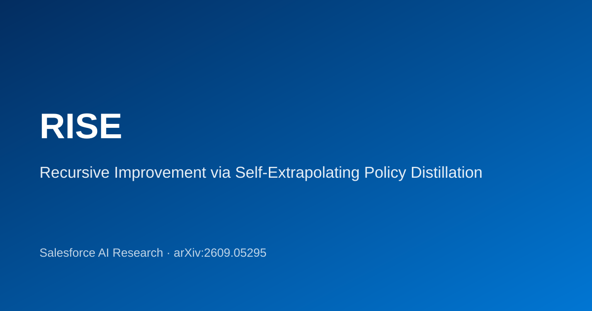

RISE: Recursive Improvement via Self-Extrapolating Policy Distillation
Build a synthetic future teacher from the model’s own RLVR trajectory — then distill dense token-level targets back into the student, with no external model or privileged context.

Abstract
On-policy distillation (OPD) provides dense, per-token supervision for language model post-training, but its effectiveness is bottlenecked by teacher quality: external teachers suffer from distribution mismatch, while self-distillation with privileged conditioning is limited by in-context learning capacity. We propose RISE (Recursive Improvement via Self-Extrapolating Policy Distillation), which constructs a synthetic teacher directly from the model’s own RLVR training trajectory. By extrapolating the displacement between the current checkpoint and a trailing anchor — in parameter space or output logit space — RISE converts a sparse outcome-induced parameter update into a dense token-level target, without any external model or privileged conditioning.
RISE combines RLVR and OPD in a complementary loop: outcome rewards ground the extrapolation toward correct reasoning, while the extrapolated teacher refines token-level decisions. Because the teacher is refreshed every iteration as the student improves, distillation becomes a recursive improvement mechanism rather than a one-shot compression step. Experiments spanning mathematical reasoning, multi-domain STEM, code generation, and multi-turn agentic tasks show that RISE outperforms RLVR-only training and on-policy self-distillation across all settings.
Highlights
- No external teacher or privileged conditioning
- Logit-space and weight-space extrapolation
- ~1.3–1.6× GRPO wall time, no extra sampling
- Gains on math, STEM, code, and agentic tasks
Cite
@misc{li2026rise,
title = {RISE: Recursive Improvement via Self-Extrapolating Policy Distillation},
author = {Yang Li and Semih Yavuz and Shafiq Joty},
year = {2026},
eprint = {2609.05295},
archivePrefix = {arXiv},
url = {https://arxiv.org/abs/2609.05295}
}